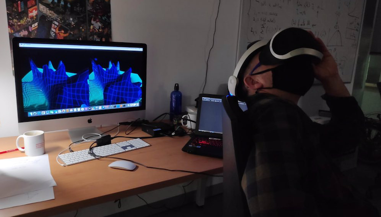

Software Projects

Netlab: Visualization and Analysis of Complex Networks
Netlab is a research-supported software platform developed for the analysis, modeling, and visualization of complex networks. Over the last decade, Netlab has contributed to numerous publications, and its visual renderings have been featured in popular media, including *The New York Times Magazine* (March 12, 2006) and a special *Nature* issue on Ecological Complexity (Vol. 442, No. 7100, July 20, 2006).
View an example of our network-based approach to the large-scale evolution of programming languages here.
Check out an example of real-time rendering in Netlab here.
Netlab Web

Access Netlab Lite, an online, compact version of the full Netlab platform. Netlab Lite enables students to program network models and conduct common analyses directly within a web browser (requires WebGL; Chrome or Firefox is recommended). This online tool brings the power of Netlab to an accessible, web-based environment.
Virtual Reality Interfaces for Network Visualization

We have also developed real-time virtual reality software for visualizing complex networks and fitness landscapes. The image above shows experiments with a standard PlayStation VR headset (we also tested the HTC Vive Pro).
Check out a 3D stereo rendering example of the Silwood Park food web, which can be viewed with a smartphone VR headset, here.
BiMat: Analysis of Bipartite Ecological Networks
BiMat is an open-source MATLAB library designed for analyzing modularity and nestedness in bipartite ecological networks. Developed in collaboration with Cesar Flores, Timothee Poisot, and Joshua Weitz, BiMat offers features such as modularity and nestedness calculations, diversity indices (Shannon and Simpson), null models for creating random bipartite networks, and additional network statistics.
Download the source code here and access the documentation here.
Chimera: Physics-Based Simulations
Our Chimera system explores "programmable life systems" by combining evolutionary dynamics with physics-based simulation (read more). In Chimera, simulations capture the physical embodiment of natural populations to more accurately represent genotype-phenotype relationships. This approach allows the design of new functions within a realistic computational model that considers emergent properties.
Future applications for Chimera include microfluidics experiments and hypothesis testing in areas such as tumor growth and angiogenesis.